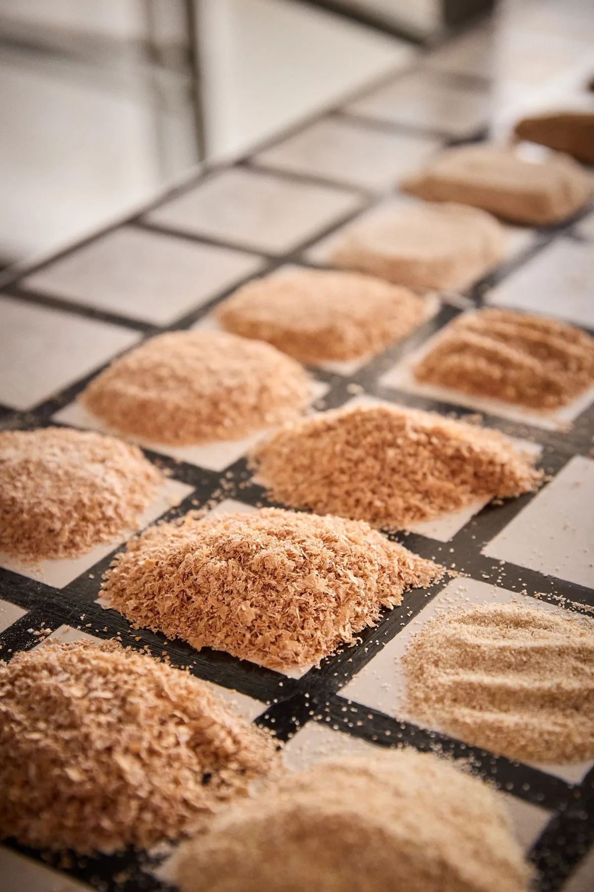
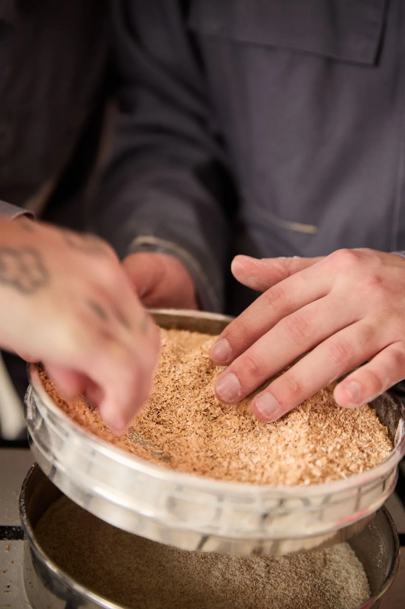
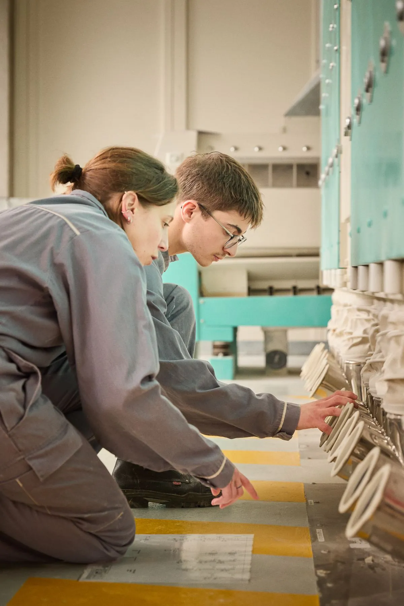
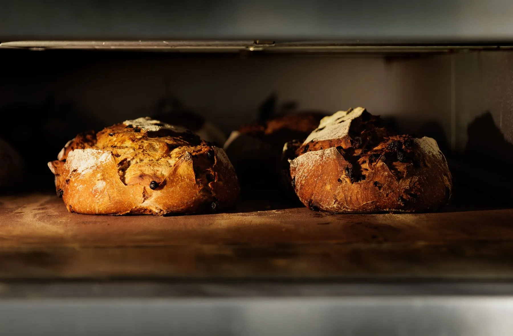
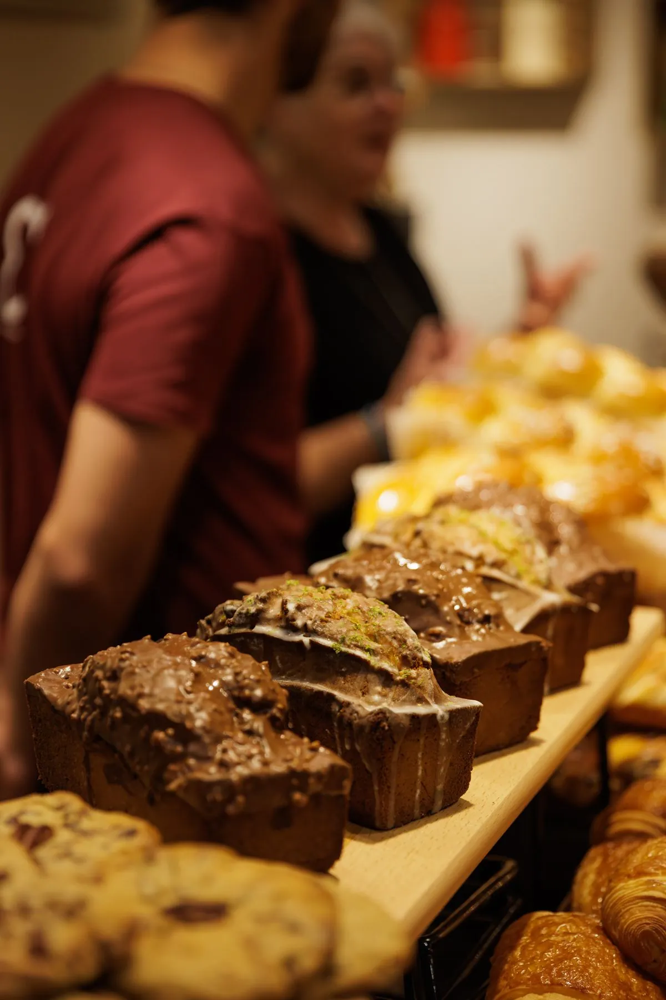
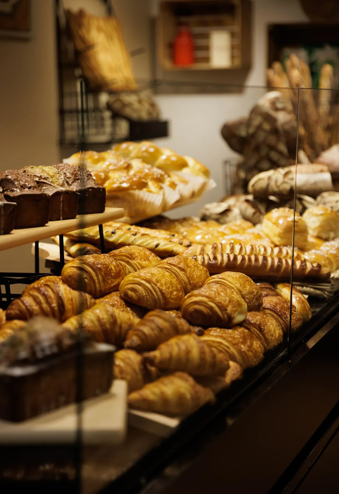
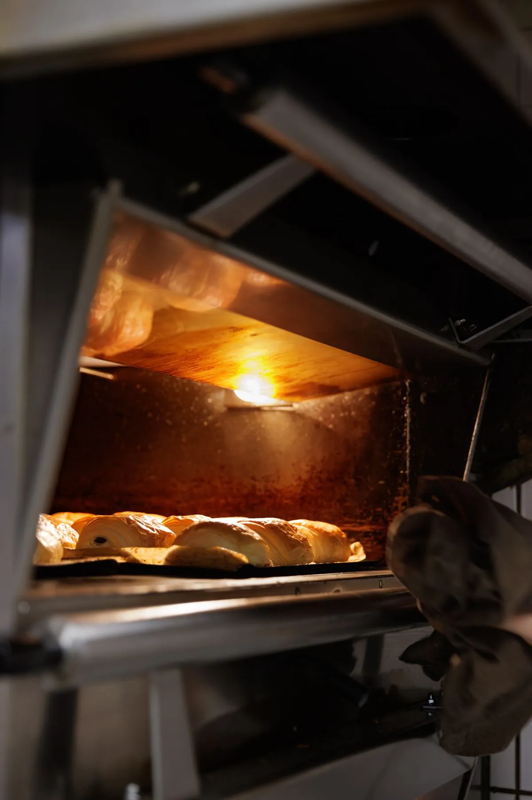
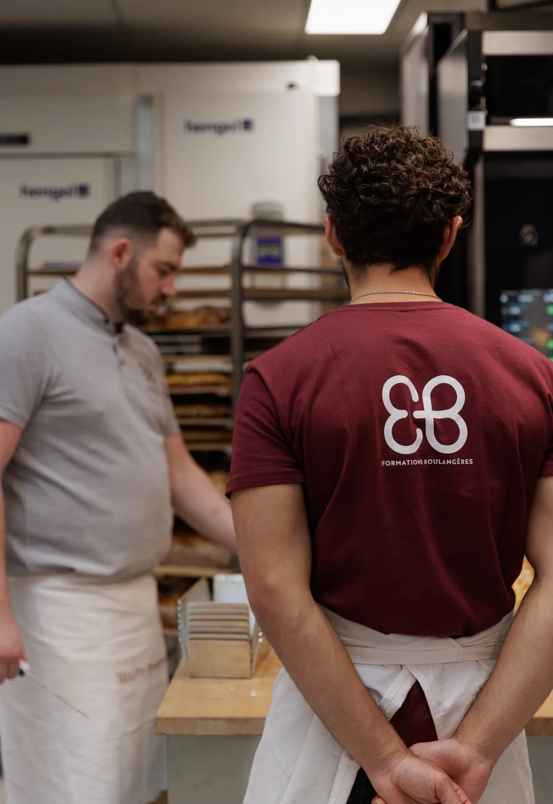
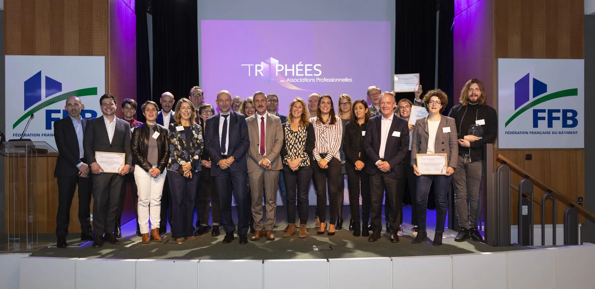

Pour l'ANMF, tout est à construire. La marque, l'identité, le territoire, le ton.
La filière meunerie-boulangerie recrute et n'arrive pas à attirer. Un secteur qui nourrit le pays chaque jour, et que personne ne voit. Pas de marque, pas de récit, pas de visage. Direction stratégie et création, je pars de la page blanche : le nom, le territoire, la voix, tout est à construire. L'angle, faire de la filière une marque qu'on a envie de rejoindre.
Mais ce qui a tout tenu, c'est l'écosystème. Le site devient le centre, les réseaux et l'influence y ramènent, le Salon de l'Agriculture lance la marque avec le soutien du Ministère, la TV, la radio et les magazines l'installent, deux cents millions de sachets baguette la portent jusque sur le comptoir, et une carte interactive reliée à France Travail transforme la curiosité en candidature. Chaque support en nourrit un autre. Meuniers, boulangers, presse et institutions financent et relaient : la campagne se paie et se propage d'elle-même.
Une marque, plusieurs publics. Le grand public à séduire, les jeunes à recruter, les meuniers et les boulangers à embarquer, les prescripteurs et le Ministère à convaincre. Et derrière l'emploi, un double enjeu : la souveraineté alimentaire, défendre le blé et le pain français, et la transmission, sauver des savoir-faire qui se perdent.
« On recrute des graines de talents ! »
La filière travaille chaque jour et pourtant, elle ne se voit pas. Les mains, la matière, les gestes, la lumière de l'aube dans un fournil. Tout était là, il fallait accepter de regarder. J'en fais un univers : une série photo qui saisit le métier comme une matière noble. Le grain, la farine, la mie, le geste juste. Pas une image agricole de plus, une marque désirable.
J'ai conçu l'identité complète, de zéro : le nom Chasseurs de Graines, le territoire, le logo, la charte, la voix. Au cœur, le site ChasseursDeGraines.fr et sa carte interactive des moulins partenaires.
Et elle vit partout : deux cents millions de sachets baguette et viennoiserie sur les comptoirs, une campagne réseaux et influence sur Facebook, Instagram et TikTok, un lancement au Salon de l'Agriculture, des passages TV, radio et presse, des supports pour les meuniers et les boulangers. De l'aube du fournil au fil TikTok, une seule marque.
Construire une marque là où il n'y a rien, c'est trouver ce que personne ne peut dire à votre place, puis le tenir partout jusqu'à ce que ça change les chiffres.
Au centre : le site, ChasseursDeGraines.fr.
Meuniers, boulangers, presse et institutions financent et relaient. Chaque support en nourrit un autre.








